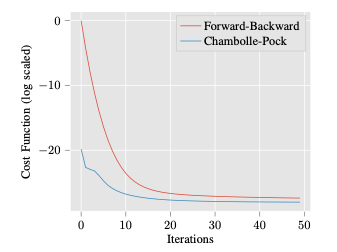

Optimization techniques have been widely used for image restoration tasks, as many imaging problems may be formulated as minimization ones with the recovered image as the target minimizer. Recently, novel optimization ideas also entered the scene in combination with machine learning approaches, to improve the reconstruction of images by optimally choosing different parameters/functions of interest in the models. This paper provides a review of the latest developments concerning the latter, with special emphasis on bilevel optimization techniques and their use for learning local and nonlocal image restoration models in a supervised manner. Moreover, the use of related optimization ideas within the development of neural networks in imaging will be briefly discussed.
Read More

In this paper we are interested in comparing the performance of some of the most relevant first order non-smooth optimization methods applied to the Rudin, Osher and Fatemi (ROF) Image Denoising Model and a Primal-Dual Chambolle-Pock Image Denoising Model. Because of the properties of the resulting numerical schemes it is possible to handle these computations pixelwise, allowing implementations based on parallel paradigms which are helpful in the context of high resolution imaging.
Read More